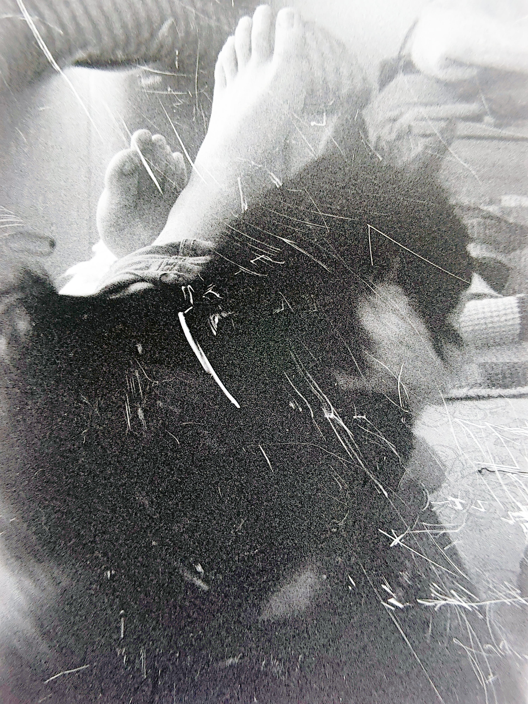

III
Amarillos
20·04·2026

En tensión me veo reflejado en una mirada que no es mía
en frente de mi, un espejo pequeño y peludo
indicándome que existo para esos ojos
que existo de una manera completamente diferente a como me imagino,
un mundo del cual no puedo ser participe mas que solo como un testigo.
Me siento y me agacho y los veo de cerca,
me miran de vuelta
y todo esta en su lugar
© 2026 Ricardo Vivanco. Todos los derechos reservados. Citas breves con atribución permitidas; para usos más amplios, contáctame.